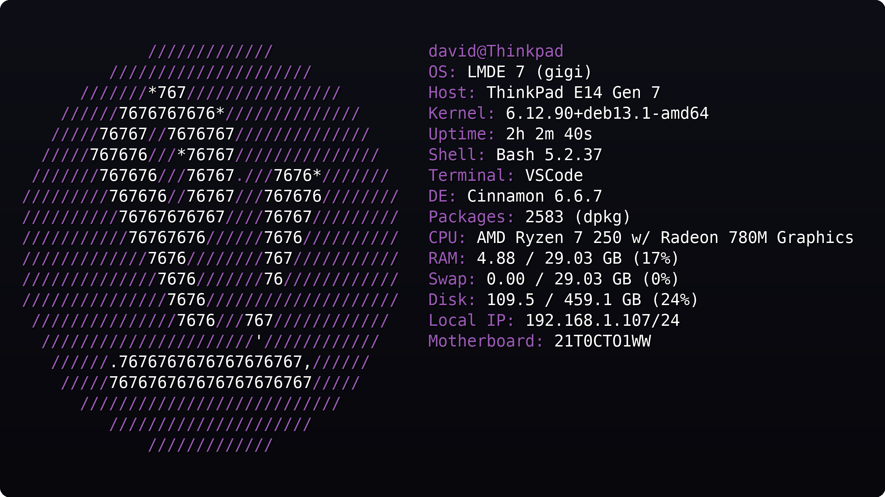
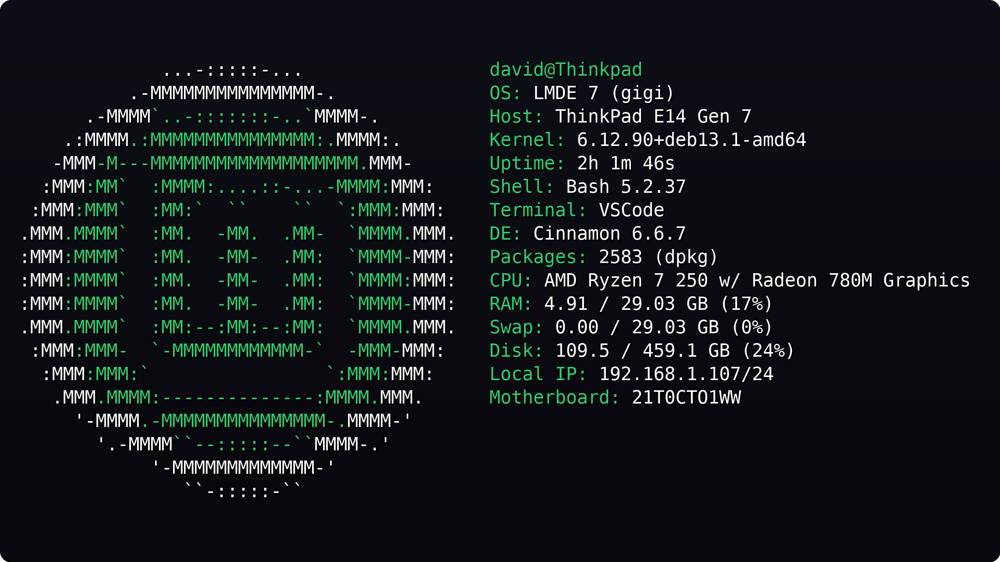

@David17c
LIGHTWEIGHT SYSTEM INFO / CLEAN OUTPUT
DFT-20260624 · 1 SOURCE · GitHub repo
WATCH 2026-06-24
ARCHIVE SIGNAL
轻量系统信息工具：把机器状态看得干净、看得快
不追求花哨定制，只想把系统信息以清爽、快速、稳定的方式摆出来。
CLEAN OUTPUT / FAST STARTUP
Dfetch 面向想要简单系统信息工具的用户：快速启动、简单配置、无外部依赖、默认输出干净。它提供 userinfo、os、host、kernel、uptime、shell、terminal、cpu、ram、swap、disk 等模块，不做复杂炫技。
NO.
MODULE
WHAT IT SHOWS
01userinfo当前用户、主机名、基础身份信息。
02os / host / kernel系统发行版、主机信息、内核版本。
03uptime / shell / terminal运行时长、Shell、终端类型。
04cpu / ram / swap / disk核心资源状态：CPU、内存、交换分区、磁盘。
05local_ip / motherboard / battery网络、硬件、电池等扩展信息。

示意图：Dfetch 在 Linux 桌面上的默认输出，重点是信息紧凑、层级清晰、无多余噪声。

示意图：不同发行版下仍保持统一、干净的系统信息布局。
为什么值得看
✓
快速启动
打开即看，不拖慢终端。
✓
简单配置
一个配置文件就能控制模块顺序与显示内容。
✓
清爽默认值
默认输出足够干净，不需要额外主题包。
配置要点
01
配置文件
~/.config/Dfetch/Dfetch.conf02
自定义 ASCII
用
custom_ascii: PATH 指向文本文件。03
强调色
使用
accent_color: green 控制标签颜色。支持的 Linux 发行版
✓
Arch / Debian / Fedora / Ubuntu
覆盖主流发行版，适合日常桌面与服务器环境。
✓
Linux Mint / Pop!_OS / Zorin OS
桌面用户常见发行版也在支持列表中。
✓
OpenSUSE / Manjaro / EndeavourOS
同样提供开箱即用的输出模板。
适用场景
✓
终端启动页
打开 shell 先看机器状态。
✓
装机检查
快速确认系统、内核、内存与磁盘情况。
✓
简洁信息展示
适合偏好干净输出的人，而不是重度自定义玩家。